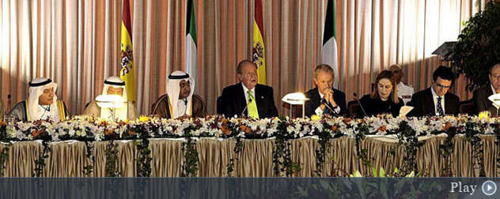

Una avería en el avión del Rey retrasa su vuelta desde Kuwait
El rey en Kuwait
EL MUNDO | EFEMadrid
- El fallo afectaba a la transmisión que abre y cierra la válvula de entrada de combustible
- El problema fue detectado cuando el Airbus comenzaba a rodar en las pistas auxiliares
- La aeronave despegó con casi una hora de retraso respecto al horario previsto
- Es el quinto incidente en la flota de las autoridades en apenas cinco meses